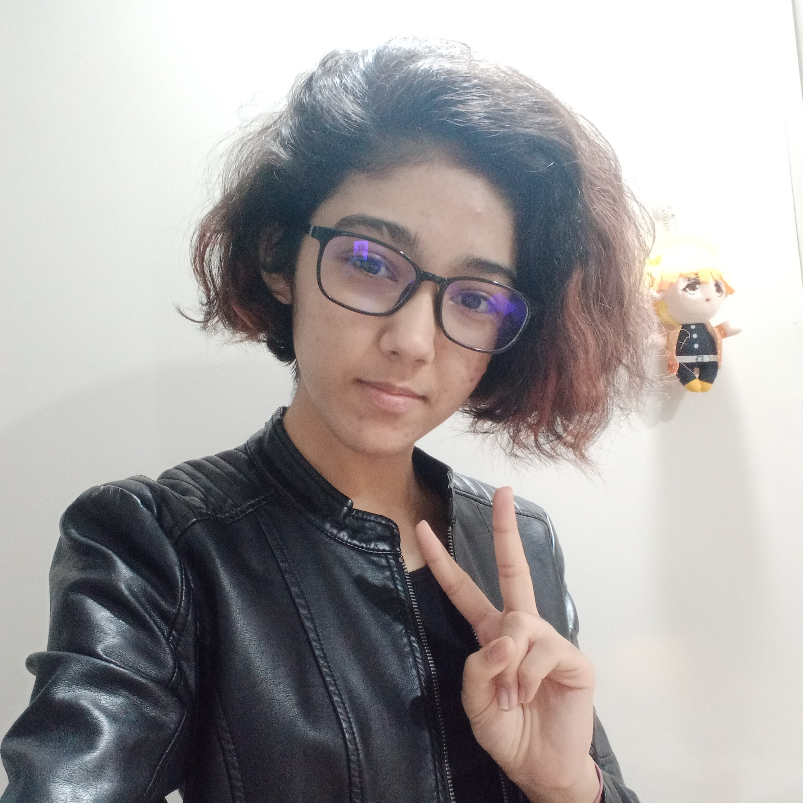

#1- Hello!
Flexbox is the most modern way to center things on the page, and makes designing responsive layouts much easier than it used to be. However, it's not fully supported in some legacy browsers like Internet Explorer.
#second- Lol

James W. Gordon is a fictional character appearing in American comic books published by DC Comics, most commonly in association with the superhero Batman. The character debuted in the first panel of Detective Comics #27 (May 1939), Batman's first appearance, making him the first Batman supporting character ever to be introduced.
#tres- two posts in one day waddup
Quantum computing is the use of quantum phenomena such as superposition and entanglement to perform computation. Computers that perform quantum computations are known as quantum computers.[1]:I-5 Quantum computers are believed to be able to solve certain computational problems, such as integer factorization (which underlies RSA encryption), substantially faster than classical computers. The study of quantum computing is a subfield of quantum information science.
Post 2
lollipop lollipop oh lolli lolli lolli 🎵lollipOP LOLlipop oOo lOlli lolli lolli~🎵
I am currently in Year 2 of my course, Diploma in Cybersecurity & Digital Forensics in Ngee Ann Polytechnic, working towards a career in Digital Forensics. This course has given me the opportunity to learn and put into practice skills such as web application penetration testing, malware analysis, and more. To deepen my knowledge about my line of study, I have attended webinars about Cyber-Security challenges and future perspectives, and about Artificial Intelligence for Cybersecurity.
Fuelled by my desire to give back to the community, I took part in many service-learning events in NP. For example, in 2021, my classmates and I taught elderly from Yong-en Care Centre to use Canva, as they had expressed interest in learning to use it, and so that we could use our knowledge to help them to adapt to a digitalized world. The same year, I was a member of a Youth Expedition Project preparing refugees from ElShaddai Refugee Learning Centre in Klang, Malaysia for their IGCSE ICT. In my free time, I volunteer in community service events through my school's community service club.
An active member of multiple clubs, I am the current Vice President of Operations in my school's interest group, ICT Society, and help organize school events as well as help out for school outreach events.
As a result of displaying academic excellence and all-roundedness, I was awarded the NP Scholarship for Year 1 and Year 2, and am a current member of The Christieara Programme. I was also given the opportuity to represent my school at the Pre-University Seminar 2021 and the Polytechnic Forum 2021.
Received GCSE 'O' Levels Certificate, and was a committed member of the school's Tenpin Bowling team. Additionally, took part in many meaningful service projects; the most notable of which includes raising hundreds of dollars to support female victims of human trafficking in collaboration with Australia-based enterprise Generation 414.
During this time, I also made the most of my secondary school years by taking part in enrichment projects- such as being one of ten select students from the school to take part in the Singapore-Thailand Enhanced Partnership Programme 2017-2018.
Having won both Bronze and Silver in The Queen's Commonwealth Essay and represented my school in the 10th MGS Regional Youth Conference, I displayed my intellectual curiosity and flair for communication. At the end of my 4 years in secondary school, I was awarded the EAGLES award.

Hi! My name is Isha, and I'm studying Cybersecurity and Digital Forensics at Ngee Ann Polytechnic and working towards a career in Digital Forensics.
Cybersecurity and Digital Forensics
This course has given me the opportunity to learn and put into practice course-related skills. The types of projects I worked on included penetration testing of published web applications, digital forensic investigation, and malware analysis.
To deepen my knowledge about my line of study, I have attended webinars about Cyber-Security challenges and future perspectives, and about Artificial Intelligence for Cybersecurity.
Community Service
Fuelled by my desire to give back to the community, I took part in many service-learning events in NP. For example, in 2021, my classmates and I taught elderly from Yong-en Care Centre to use Canva, as they had expressed interest in learning to use it, and so that we could use our knowledge to help them to adapt to a digitalized world.
The same year, I was a member of a Youth Expedition Project preparing refugees from ElShaddai Refugee Learning Centre in Klang, Malaysia for their IGCSE ICT. In my free time, I volunteer in community service events.
In secondary school, I organized a project to raise hundreds of dollars supporting female victims of human trafficking in collaboration with Australia-based enterprise Generation 414.
Leadership
Currently, I am the Vice President of Operations for my interest group in school. In 2021, I was given the opportunity to represent my school at the Pre-University Seminar and the Polytechnic Forum. I am also a member of The Christieara Programme.